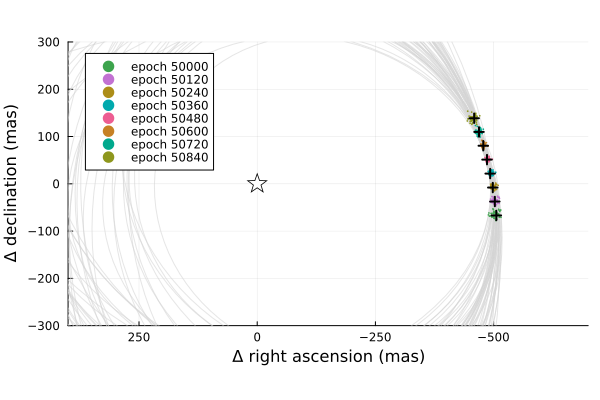

Posterior Predictive Checks
A posterior predictive check compares our true data with simulated data drawn from the posterior. This allows us to evaluate if the model is able to reproduce our observations appropriately. Samples drawn from the posterior predictive distribution should match the locations of the original data.
To demonstrate, we will fit a model to relative astrometry data:
using Octofitter
using Plots:Plots
using Distributions
astrom_like = PlanetRelAstromLikelihood(Table(;
epoch= [50000,50120,50240,50360,50480,50600,50720,50840,],
ra = [-505.764,-502.57,-498.209,-492.678,-485.977,-478.11,-469.08,-458.896,],
dec = [-66.9298,-37.4722,-7.92755,21.6356, 51.1472, 80.5359, 109.729, 138.651,],
σ_ra = fill(10.0, 8),
σ_dec = fill(10.0, 8),
cor = fill(0.0, 8)
))
@planet b Visual{KepOrbit} begin
a ~ truncated(Normal(10, 4), lower=0, upper=100)
e ~ Uniform(0.0, 0.5)
i ~ Sine()
ω ~ UniformCircular()
Ω ~ UniformCircular()
θ ~ UniformCircular()
tp = θ_at_epoch_to_tperi(system,b,50420) # reference epoch for θ. Choose an MJD date near your data.
end astrom_like
@system Tutoria begin
M ~ truncated(Normal(1.2, 0.1), lower=0)
plx ~ truncated(Normal(50.0, 0.02), lower=0)
end b
model = Octofitter.LogDensityModel(Tutoria)
using Random
Random.seed!(0)
chain = octofit(model)Chains MCMC chain (1000×28×1 Array{Float64, 3}):
Iterations = 1:1:1000
Number of chains = 1
Samples per chain = 1000
Wall duration = 8.31 seconds
Compute duration = 8.31 seconds
parameters = M, plx, b_a, b_e, b_i, b_ωy, b_ωx, b_Ωy, b_Ωx, b_θy, b_θx, b_ω, b_Ω, b_θ, b_tp
internals = n_steps, is_accept, acceptance_rate, hamiltonian_energy, hamiltonian_energy_error, max_hamiltonian_energy_error, tree_depth, numerical_error, step_size, nom_step_size, is_adapt, loglike, logpost, tree_depth, numerical_error
Summary Statistics
parameters mean std mcse ess_bulk ess_tail rh ⋯
Symbol Float64 Float64 Float64 Float64 Float64 Float ⋯
M 1.1875 0.0956 0.0038 625.6395 577.8214 1.00 ⋯
plx 49.9985 0.0195 0.0007 896.4555 475.7977 1.00 ⋯
b_a 11.8349 2.3565 0.1598 202.6004 396.0851 1.00 ⋯
b_e 0.1610 0.1182 0.0063 346.5163 370.4450 1.00 ⋯
b_i 0.6427 0.1507 0.0110 214.4496 246.5914 1.00 ⋯
b_ωy -0.0152 0.7276 0.0759 110.2427 522.3262 1.01 ⋯
b_ωx -0.0177 0.6874 0.0775 92.7762 573.5511 1.02 ⋯
b_Ωy 0.0370 0.7676 0.1218 50.8776 280.8416 1.04 ⋯
b_Ωx 0.0244 0.6407 0.0951 52.6911 305.0185 0.99 ⋯
b_θy 0.0743 0.0074 0.0003 688.5067 564.1153 1.00 ⋯
b_θx -0.9980 0.0199 0.0007 819.0402 573.5777 1.00 ⋯
b_ω -0.2587 1.8200 0.1659 178.3398 620.4002 1.01 ⋯
b_Ω -0.3968 1.7744 0.2394 82.2245 285.9753 1.04 ⋯
b_θ -1.4964 0.0074 0.0003 692.8505 466.9885 0.99 ⋯
b_tp 42932.3965 5599.5849 356.3732 252.3977 396.5838 1.00 ⋯
2 columns omitted
Quantiles
parameters 2.5% 25.0% 50.0% 75.0% 97.5%
Symbol Float64 Float64 Float64 Float64 Float64
M 1.0078 1.1197 1.1859 1.2532 1.3715
plx 49.9596 49.9859 49.9983 50.0120 50.0368
b_a 8.3954 10.2290 11.3752 13.0101 17.7344
b_e 0.0047 0.0618 0.1370 0.2416 0.4181
b_i 0.2918 0.5616 0.6544 0.7423 0.8986
b_ωy -1.0011 -0.7324 -0.0530 0.7140 0.9963
b_ωx -0.9892 -0.6939 -0.0674 0.6672 0.9972
b_Ωy -1.0024 -0.7949 0.0913 0.8346 1.0012
b_Ωx -0.9929 -0.5745 0.0838 0.5815 0.9858
b_θy 0.0592 0.0695 0.0744 0.0791 0.0891
b_θx -1.0380 -1.0113 -0.9973 -0.9836 -0.9609
b_ω -2.9908 -2.0684 -0.1177 1.1171 2.9437
b_Ω -3.0239 -2.2141 0.1635 0.8007 2.9707
b_θ -1.5110 -1.5014 -1.4966 -1.4917 -1.4816
b_tp 30469.8071 40317.5012 44187.4567 46874.3092 49924.3363
We now have our posterior as approximated by the MCMC chain. Convert these posterior samples into orbit objects:
# Instead of creating orbit objects for all rows in the chain, just pick
# every twentieth row.
ii = 1:20:1000
orbits = Octofitter.construct_elements(chain, :b, ii)50-element Vector{Visual{KepOrbit{Float64}, Float64}}:
Visual{KepOrbit{Float64}, Float64}(KepOrbit(11.2, 0.139, 0.714, 1.97, 0.719, 46500.0, 1.26), 49.96677117041291, 4.128043401014008e6)
Visual{KepOrbit{Float64}, Float64}(KepOrbit(12.2, 0.195, 0.815, 0.278, 4.73, 37200.0, 1.31), 50.03506803795177, 4.1224087043020963e6)
Visual{KepOrbit{Float64}, Float64}(KepOrbit(14.8, 0.346, 0.751, 0.539, 4.8, 31200.0, 1.07), 50.014584302618346, 4.1240970584094543e6)
Visual{KepOrbit{Float64}, Float64}(KepOrbit(13.9, 0.4, 0.623, 0.661, 5.36, 33900.0, 1.07), 50.00195765221938, 4.125138488269664e6)
Visual{KepOrbit{Float64}, Float64}(KepOrbit(11.0, 0.00686, 0.6, 2.14, 0.793, 46700.0, 1.2), 50.01446568259445, 4.1241068395894584e6)
Visual{KepOrbit{Float64}, Float64}(KepOrbit(17.3, 0.208, 0.785, -1.48, 0.271, 25100.0, 1.02), 50.00592518912719, 4.1248111942711994e6)
Visual{KepOrbit{Float64}, Float64}(KepOrbit(9.81, 0.0744, 0.212, -1.41, 1.65, 41900.0, 0.97), 49.96431549496119, 4.1282462885096753e6)
Visual{KepOrbit{Float64}, Float64}(KepOrbit(10.4, 0.0597, 0.632, 2.23, 1.28, 48200.0, 1.25), 49.986456505943465, 4.126417722277929e6)
Visual{KepOrbit{Float64}, Float64}(KepOrbit(12.1, 0.00143, 0.658, 0.268, 3.67, 48300.0, 1.18), 49.98286494283933, 4.126714229684228e6)
Visual{KepOrbit{Float64}, Float64}(KepOrbit(13.1, 0.211, 0.792, -0.445, 4.06, 48100.0, 1.33), 49.99258025663964, 4.125912264202555e6)
⋮
Visual{KepOrbit{Float64}, Float64}(KepOrbit(11.8, 0.238, 0.664, -2.59, 3.13, 40800.0, 1.31), 50.013206741621296, 4.124210652310463e6)
Visual{KepOrbit{Float64}, Float64}(KepOrbit(13.5, 0.236, 0.817, -2.63, 3.14, 37400.0, 1.08), 50.00242095516396, 4.125100266344167e6)
Visual{KepOrbit{Float64}, Float64}(KepOrbit(7.92, 0.313, 0.331, 1.21, 0.386, 46800.0, 1.37), 49.99921787472883, 4.1253645310370508e6)
Visual{KepOrbit{Float64}, Float64}(KepOrbit(8.78, 0.28, 0.617, 1.0, 0.731, 46200.0, 1.25), 49.96008828727252, 4.128595586420263e6)
Visual{KepOrbit{Float64}, Float64}(KepOrbit(10.9, 0.307, 0.78, -1.96, 3.21, 43300.0, 1.26), 50.023437689179644, 4.1233671560444613e6)
Visual{KepOrbit{Float64}, Float64}(KepOrbit(11.1, 0.154, 0.694, 2.12, 0.794, 46800.0, 1.06), 49.9977160033409, 4.125488452036832e6)
Visual{KepOrbit{Float64}, Float64}(KepOrbit(10.4, 0.155, 0.55, 0.87, 0.104, 43300.0, 1.22), 49.994874833739466, 4.12572290031618e6)
Visual{KepOrbit{Float64}, Float64}(KepOrbit(11.6, 0.209, 0.68, 0.603, 0.146, 41500.0, 1.29), 49.9822840321289, 4.126762191728006e6)
Visual{KepOrbit{Float64}, Float64}(KepOrbit(8.64, 0.315, 0.51, -2.39, 3.73, 45300.0, 1.19), 50.01179350548946, 4.124327194491829e6)Calculate and plot the location the planet would be at each observation epoch:
epochs = astrom_like.table.epoch' # transpose
x = raoff.(orbits, epochs)
y = decoff.(orbits, epochs)
Plots.plot(orbits, kind=(:raoff, :decoff), color=:lightgrey)
Plots.scatter!(
x, y,
lims=:symmetric,
markerstrokewidth=0,
markersize=1,
legend=:topleft,
label=["epoch $i" for i in epochs]
)
Plots.plot!(astrom_like, linewidth=2, color=:black, label="observed")
Plots.scatter!([0],[0], marker=(:star,:black, :white, 10),label="")
Plots.xlims!(-700,400)
Plots.ylims!(-300,300)
Looks like a great match to the data! Notice how the uncertainty around the middle point is lower than the ends. That's because the orbit's posterior location at that epoch is also constrained by the surrounding data points. We can know the location of the planet in hindsight better than we could measure it!
You can follow this same procedure for any kind of data modelled with Octofitter.